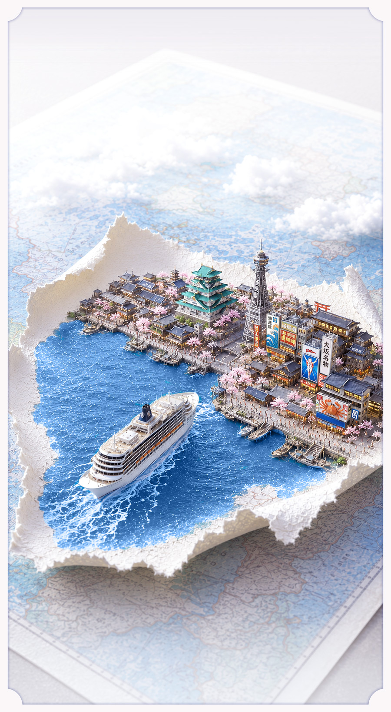
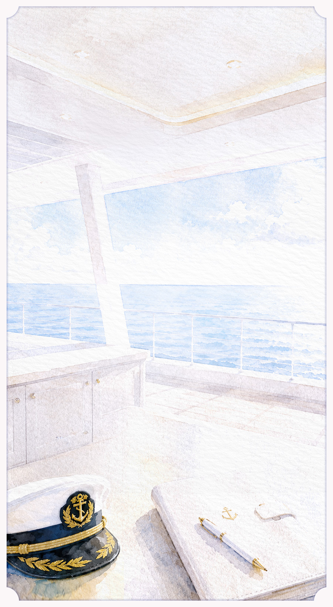
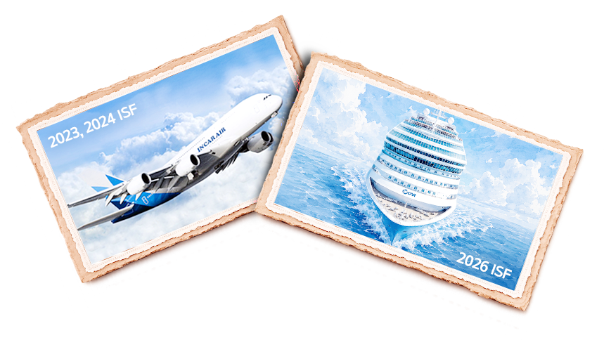
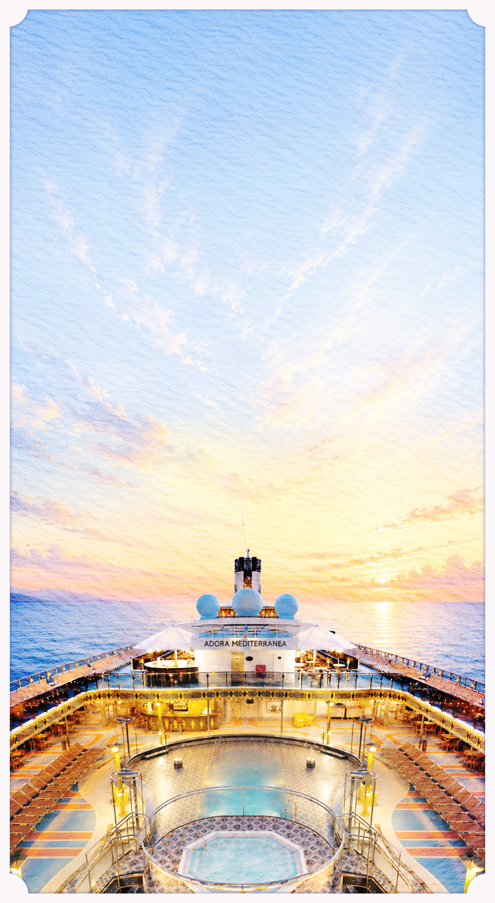
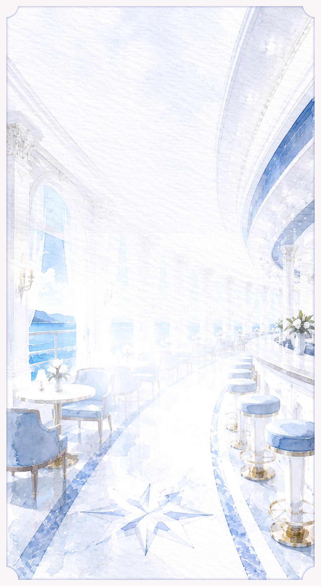
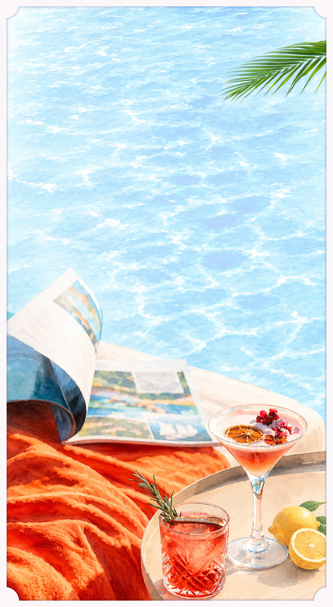
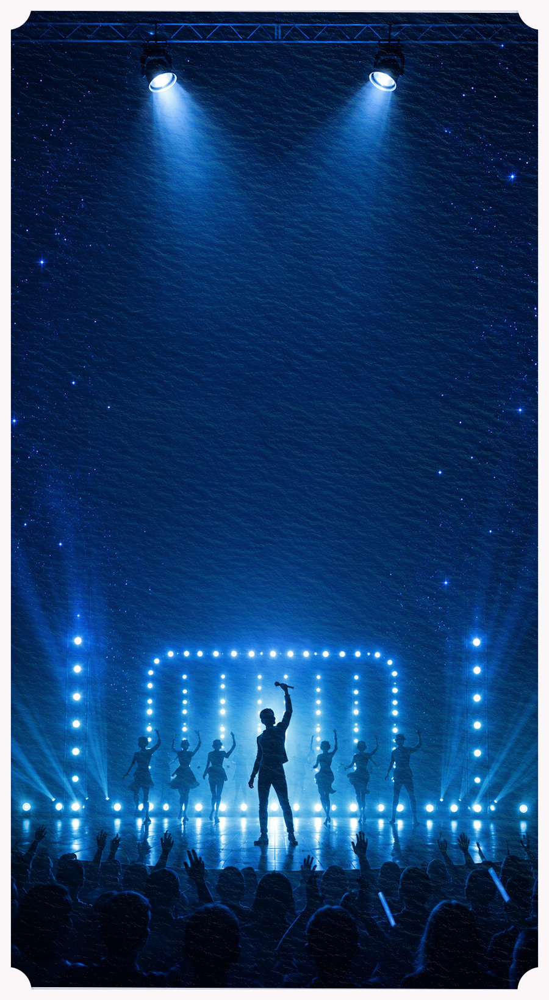
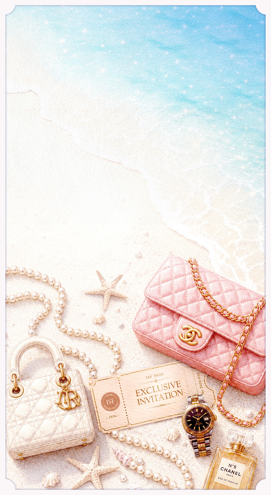
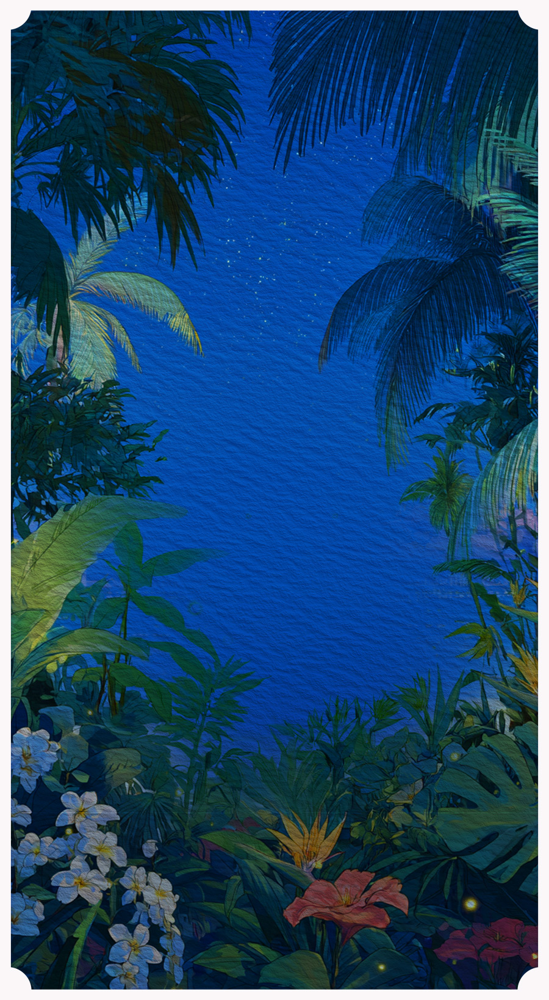
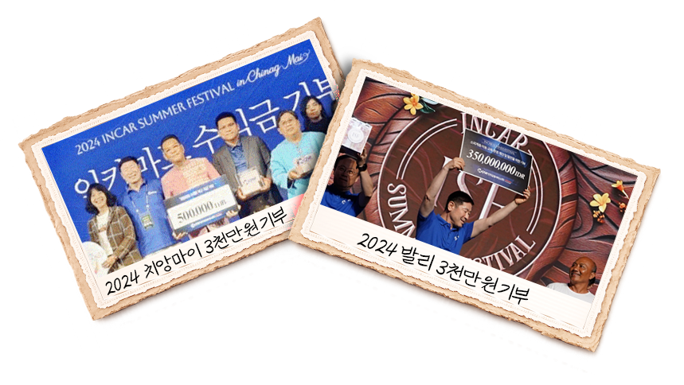

좌우로 슬라이드하면 화면이 전환됩니다


인카 ISF는
매년 5천여명이 목표를 달성하고
그 중 2천명 이상이 특별한 감동을 경험합니다.
누구나 도전할 수 있고, 함께 성취해나가는 ISF.
혼자만의 성공을 넘어
모두가 하나 되는 축제이기에,
인카에서 가장 특별한 무대입니다.
이 가이드북과 함께 여정을 시작해보시죠!

2년 연속,
인카 가족만을 위한 전세기.
그리고 2026년, 초대형 단독 크루즈.
전세기에 이어, 크루즈 한 척을
오롯이 채우는 ISF 스케일.
인카가족만이 누릴 수 있는 자부심입니다.
2만 5천 명의 도전을 믿기에,
인카는 오늘도 더 큰 무대를
준비했습니다.

“인카가족 여러분, 현재 우리 크루즈는
푸른 동해를 따라 순항하고 있습니다.”
이제 곧 가장 먼저 떠오르는
아침을 맞이할 예정입니다.
쉽게 닿기 어려운 독도를 눈앞에 두고,
수평선 위로 번지는 첫 빛을 함께 바라보는 이순간.
우리의 여정은 가장 먼저 떠오르는
해를 맞이 하며 시작합니다.

핀란드에서 건조된 크루즈,
아도라 메디테라니아호는
17세기 이탈리아 궁정 양식을 현대적으로 재해석한
우아하고 품격 있는 공간을 선보입니다.
약 8만 5천 톤, 길이 293m.
최대 2,680명을 품는 거대한 크루즈.
1,047개의 객실과 11곳의 이벤트홀,
3곳의 풀파티 수영장, 2개의 대극장과 중앙정원까지.
하나의 도시를 옮겨놓은 듯한 압도적인 규모.
이 모든 공간이, 인카가족만을 위한
특별한 세계가 됩니다.

크루즈에서는 목적지로 향하는 시간에도
새로운 경험이 이어집니다.
오픈 데크에서는 풀파티를 즐기고,
야외 라운지에서는 칵테일을 마시며 여유를 누립니다.
11개의 이벤트 공간에서는 노래대회와 게임,
강연과 다양한 참여 프로그램이 이어지고,
면세 쇼핑과 카지노, 마사지와 스파까지.
취향에 따라
다채로운 즐거움을 누릴 수 있습니다.

해가 저물면
인카크루즈의 또 다른 무대가 시작됩니다.
오직 ISF만을 위해 준비된
유명 초청가수와 DJ의 무대를 비롯해
라이브 예술쇼까지!
평범한 일상을 벗어나 더 화려하고 자유롭게!
오늘 밤의 주인공은 바로 당신입니다.

아직 끝나지 않았습니다.
ISF의 하이라이트, 최고의 성과를 이룬 인카가족을 위한
수억 원 규모의 특별한 이벤트가 기다리고 있습니다.
천만 원대 명품 가방부터 프리미엄 워치까지,
높은 구간을 달성할수록 추첨 기회도 많아집니다.
당신의 이름이 불리는 순간을 상상해보세요.
기다림이 짜릿한 환호로 바뀌는 그 순간을!

ISF의 마지막 밤은
여행의 즐거움을 넘어,
도움이 필요한 이웃과 따뜻한 마음을 나누는
기부를 이어왔습니다.
우리가 지나간 곳에 희망이 싹트는 것.
그것이 인카가 여행을 완성하는
방식입니다.

· 시상기간 : 2026.07.01 – 2026.09.31
*ISF 달성자 중 여행 불참 또는 여행 진행이 불가 시 1인당 140만원 현금대체 시상
*단, 13회차 유지 평가 후 최종 지급구간 및 지급여부 확정
*인정비율 및 자세한내용은 IIMS 공지사항 참조